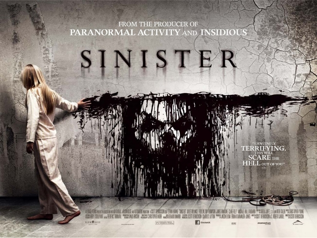
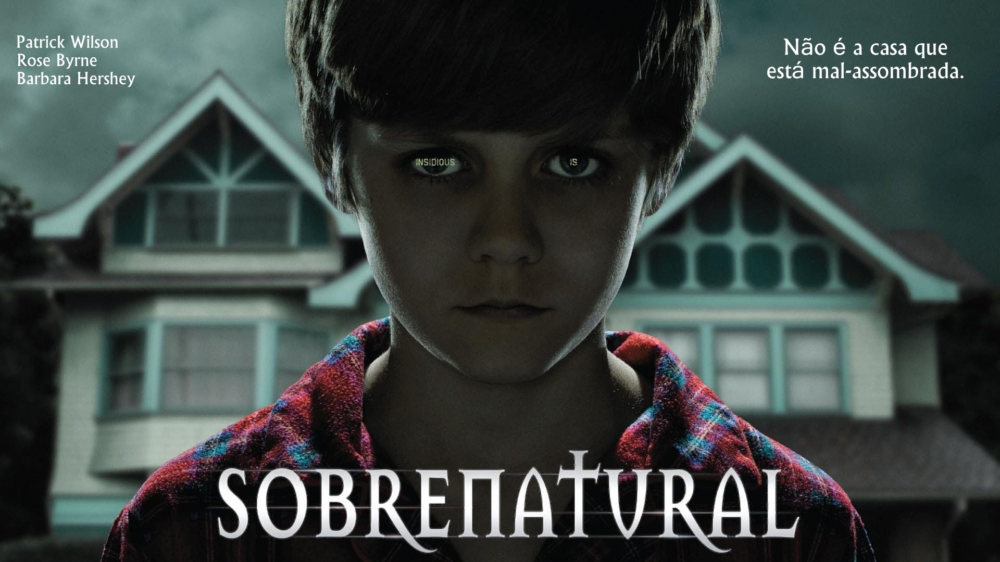

SINISTER
sinopse: Ellison (Ethan Hawke) é um escritor de romances policias que acaba de se mudar com a família. No sótão da nova casa ele descobre antigos rolos de filme, que trazem imagens de pessoas sendo mortas. Intrigado com o que elas representam e com um estranho símbolo presente nas imagens, ele e sua família logo passam a correr sério risco de morte.

INVOCAÇÃO DO MAL
Os investigadores paranormais Ed e Lorraine Warren trabalham para ajudar a família aterrorizada por uma entidade demoníaca em sua fazenda.

SOBRENATURAL
josh e Renai se mudam com a família para uma casa maior. Lá, o filho Dalton sofre um estranho acidente e entra em coma. Enquanto eles tentam salvar o menino, entidades malignas atormentam a família.